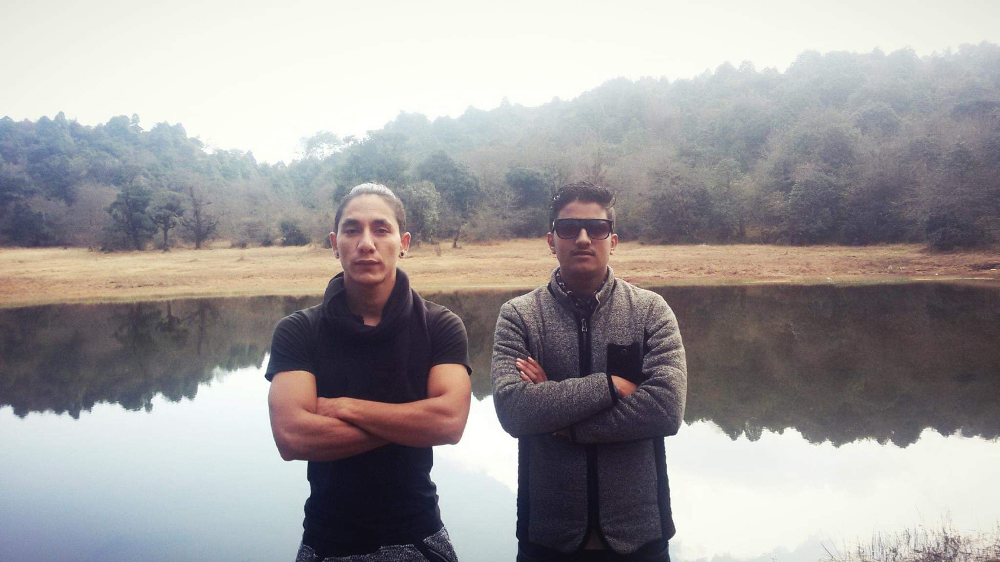
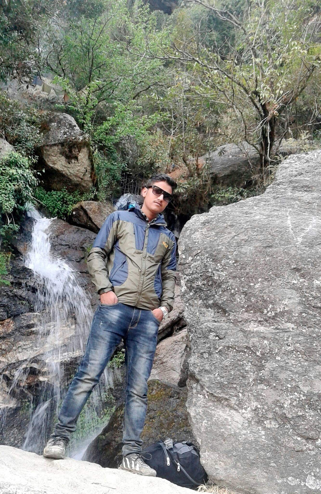
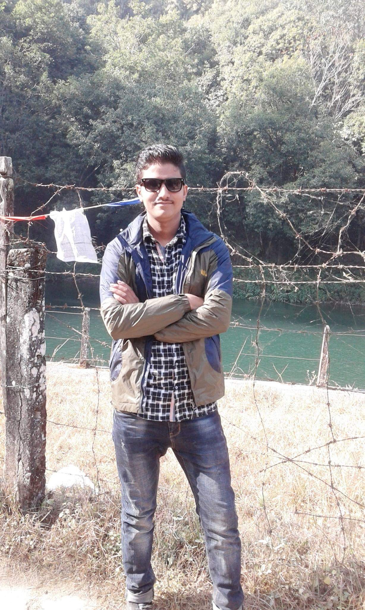
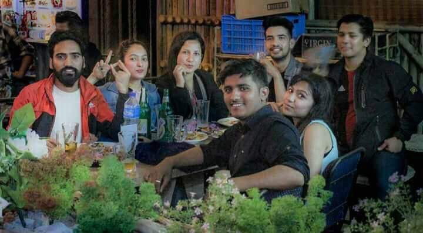

I love to travel different places.In my country Nepal there are many beautiful places where we can travel and enjoy.The great mountain ranges are some of the most beautiful and interesting areas of the Nepal to visit.I had traveled with my friends to Chitlang as the place is not served by roads, it is most remote and difficult places to get to and the only real way to see them is on foot we can enjoy the morning mountain view there and on the way while travelling there are many waterfalls as the place is cold at the top because of the Chitlang is at about 4855 ft high from the sea level.I have many memories of trip to chitlang captured in image with my friends.    